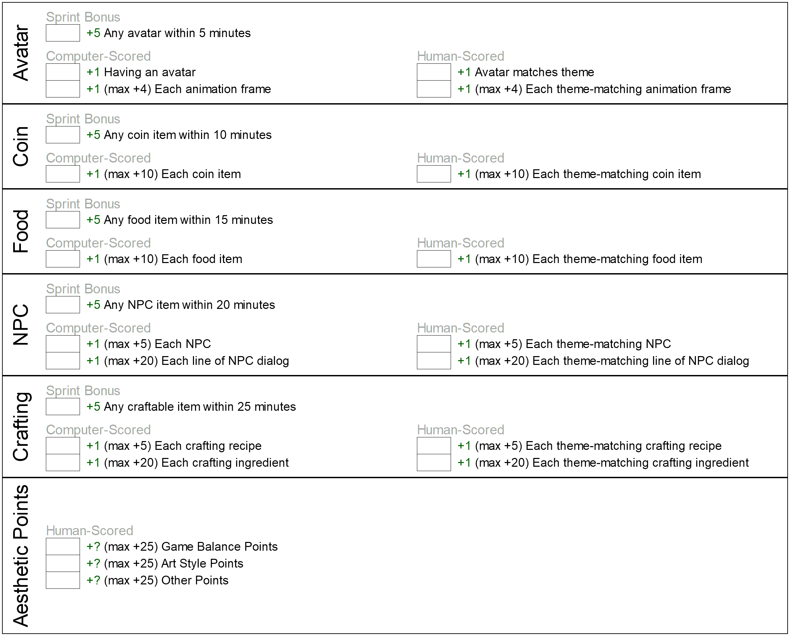
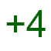

2 Training Recommendations
The Game Jam is not easy. The tight time constraints require competitors to have a high level of mastery over various aspects of game design.
Mastery is the key word here. It is not enough to have simply "been exposed" to some concept. That is familiarity – not mastery.
The training program given here is intended to give students mastery over the skills needed to excel at the Scholastic Game Jam.
It is also intended to be fun! Mastery requires repetition. Mastery requires holding oneself to high standards. Sometimes it can be a challenge to keep having fun while pursuing mastery. The following curriculum is intended to keep the road to mastery as fun as possible.
At the end of the day, though, the main ingredient to fun is the energy of the coach. If you’re a coach, whether you follow these recommendations or not, keep in mind that if you’re excited about the Game Jam, your competitors will be too. If you’re excited about your competitors’ ascendency to mastery, they will be too.
Be loud. Be proud. Be a coach.
2.1 Training Katas
Coaches will train competitors by helping them acquire the necessary skills to excel at the Game Jam competition. Competitors who have mastered these skills will earn katas. These katas serve as visual, wearable representations of a competitor’s hard work.
Kata key:
 - Meta Katas - for skills related to excelling as a Game Jam competitor.
 - Avatar Katas - for skills related to creating avatars
- Avatar Katas - for skills related to creating avatars
- Coin Katas - for skills related to creating coin items
- Food Katas - for skills related to creating food items
 - NPC Katas - for skills related to creating NPCs
- Crafter Katas - for skills related to creating crafters and recipes